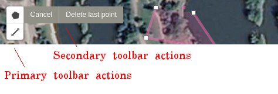

Designing Leaflet.toolbar
Leaflet.toolbar, a JavaScript library for building flexible and extensible toolbars for Leaflet maps, is just released and available on npm. Leaflet.toolbar is an effort to extend the excellent Leaflet.draw plugin and to enable new kinds of map / user interactions. In particular, Leaflet.toolbar aims to:
- Decouple the actions exposed by a toolbar from its overall behavior and appearance;
- Enable both control-style and popup-style toolbars out of the box;
- Make it easy for library developers to define new kinds of toolbars;
- Be easy for application developers to instantiate;
- Remain interoperable with Leaflet.draw.
Here's where Leaflet.toolbar came from and why I built it.
Why build a toolbar plugin?
The idea for Leaflet.toolbar came from a discussion with Mathew Lippincott and Jeffrey Warren at the end of the summer of 2014.
Matt and Jeff were my mentors for a Google Summer of Code project focused on improving MapKnitter, a piece of software created by Public Lab for Open Technology and Science to enable grassroots mappers to do georectification.
Matt and Jeff had found that Public Lab community members, unable to communicate the purpose of their maps using MapKnitter, would export their maps as images, then draw on them in Powerpoint or by hand, adding arrows, lines, circles, and text annotations directly on the map. Matt noted in a wonderful research note that, historically, mapmakers have written and annotated their maps using different size fonts, multiple colors, and fonts of varying sizes to encode dense, overlapping geographic information. Until recently, web maps (and especially raster maps) lacked this degree of expressiveness.

It was important to us to bring the full expressiveness of analog mapping into the browser so that citizen scientists and mapmakers could easily communicate the purpose of their maps.
Migrating from OpenLayers to Leaflet gave Public Lab the opportunity to envision how we might enable this kind of expressive digital mapmaking. Leaflet ships with a full complement of vector annotation layers - circles, rectangles, polygons, and polylines - that can be overlaid on maps. Leaflet.draw makes these layers interactive, enabling users to create annotations dynamically by drawing them on the map. This was a great first step. However, Leaflet.draw didn't provide any way for users to alter the style of these map annotations - their color, weight, or opacity, for example.
Leaflet.draw exported a toolbar which was the entry point for its interaction functionality. In Leaflet.Illustrate, I began developing new kinds of map annotations. Yet, when I tried to expose these new kinds of annotations to users alongside those provided by Leaflet.draw, I found that its toolbar wasn't easy to extend. The toolbar was not the core of the new features I was trying to develop, but because it was the entry point for users, it deeply affected the user experience.
This plugin is an effort to generalize the elegant toolbar provided by Leaflet.draw and to overcome some of its limitations.
Toolbar actions
The toughest and most protracted challenge in designing Leaflet.toolbar was deciding how to represent toolbar actions. The difficult was that toolbar actions couldn't be instantiated when the toolbar was defined (for example, by a plugin developer) because these actions took as mandatory arguments to their constructors a map object, which is usually created by application developers.
Leaflet.draw solved this by defining the actions in the toolbar in a method of the concrete DrawToolbar class.
L.DrawToolbar = L.Toolbar.extend({
...
getModeHandlers: function(map) {
return [
...
{
enabled: this.options.polyline,
handler: new L.Draw.Polyline(map, this.options.polyline),
title: L.drawLocal.draw.toolbar.buttons.polyline
},
...
];
}
...
});I struggled with this for a long time. I wanted to separate the specification of a toolbar's actions from its behavior as an generic interface, so I didn't feel that it was appropriate to define the actions in a method of a specific toolbar class. Yet I was facing the same difficulty as Leaflet.draw - the necessity to make the map variable available to the toolbar action constructors.
I'm very pleased with the solution I came up with (at long last, after months of re-re-refactoring). Leaflet.toolbar requires developers to define the actions in a toolbar as a simple array of constructors extending L.ToolbarAction:
L.DrawToolbar = L.Toolbar.Control.extend({
options: {
actions: [
L.Draw.Polyline,
L.Draw.Polygon,
L.Draw.Rectangle,
L.Draw.Circle,
L.Draw.Marker
]
}
});This is direct and concise. What's more, this new pattern makes it easy for application developers to customize the behavior of an action at toolbar instantiation by extending the action to create an anonymous class:
var polylineOptions = { color: '#db1d0f', weight: 3 };
new L.DrawToolbar({
actions: [
L.Draw.Polyline.extend({ options: polylineOptions }),
...
]
})This succint specification for toolbar actions is made possible by a little bit of wizardry with Leaflet's built-in classical inheritance system and by overloading L.Toolbar#addTo.
Overloaded #addTo method and _getActionConstructor
Conceptually, a toolbar is an interface that allows a user to manipulate the state of objects on the map or the map itself. Leaflet.toolbar allows the developer to specify which map objects the toolbar will control. In order to keep the API simple, L.Toolbar#addTo is overloaded to add the toolbar to the map, and to designate the map objects which the toolbar will control. The arguments of L.Toolbar#addTo are passed to each action in turn. That is,
new L.Popup.Toolbar({
options: { actions: [EditShape, DeleteShape] }
}).addTo(map, shape);calls new EditShape(map, shape) and new DeleteShape(map, shape) in turn.
The magic that makes this work (which didn't come to me until late December) is all contained in L.Toolbar#_getActionConstructor.
Variadic functions are easy to construct in JavaScript using Function.prototype.apply, but this technique doesn't work with constructors. To treat the toolbar action constructors generically, without regard for their arity, Toolbar#_getActionConstructor creates an anonymous class extending each toolbar action to initialize the toolbar action with the appropriate arguments:
_getActionConstructor: function(Action) {
...
return Action.extend({ // creates an new class
initialize: function() {
Action.prototype.initialize.apply(this, args);
},
...
});
}This trick uses Leaflet's built-in classical inheritance system to create pseudo variadic constructors in JavaScript.
Secondary toolbars
I thought I was done developing Leaflet.toolbar after about a month of tinkering with it in my spare time. Looking back at Leaflet.draw to confirm I had implemented all of its features, I noticed that each action in the toolbar, once triggered, provided a menu of secondary options related to the action at hand; for example, users drawing a polygon or polyline are given the option to cancel drawing, or to delete just the last point. No problem, I thought. I'll just add that in - it'll take a couple of days.

Wrong! My design at the time had no way of accomodating these secondary actions. It took me the next few months, still working in my spare time, to reorganize the code to accomodate these secondary actions.
The menu of secondary actions, I realized, was kind of like a toolbar. Why not just make it an instance of L.Toolbar? This was the solution I settled on: the subToolbar option of each toolbar action points to an instance of L.Toolbar containing the appropriate secondary actions.
This system of nested toolbars made for efficient code reuse, but meant that the CSS styles had to be seriously modified. Toolbars in Leaflet.toolbar are automatically given a leaflet-toolbar-n class, where n is the 0-based level of the toolbar in the nested toolbar hierarchy. This allows for styles to be applied easily across all toolbars and menus at the same hierarchical level. One drawback of this method is that styles have to be tightly scoped to avoid inadvertently styling containing toolbars (for example: leaflet-toolbar-0 > li > .leaflet-toolbar-icon {...}) - but hey, you can't win them all!
Looking back
The toughest part of this project, hands down, was dealing with the constraints of an existing API. Developing Leaflet.toolbar was different from working on other libraries that I've contributed to because, with Leaflet.toolbar, I was proposing to take over functionality from Leaflet.draw, rather than extending it. I wanted to inroduce a new dependency into the stack that would handle existing functionality. Working on a project with this degree of interdependence between the parts was new for me, and it was difficult. There were times when I felt that my ideas for Leaflet.toolbar couldn't possibly be accomodated by Leaflet.draw's API, and I dreamed about drastic rewrites of Leaflet.draw that might mesh more neatly with my toolbars. Thank god I didn't follow through on those dreams! Both Leaflet.draw and Leaflet.toolbar would have been worse off! I did make some small changes to Leaflet.draw, such as modifying each drawing handler to inherit from L.ToolbarAction rather than L.Handler, but for the most part, I left it as-is.
While it was sometimes frustrating, Leaflet.draw was an enormous help to me in developing Leaflet.toolbar. I used @jacobtoye's excellent control-style toolbar as the inspiration and the spec for Leaflet.toolbar, and I was constantly tabbing back to Leaflet.draw to check the functionality of the Leaflet.draw toolbars. I worked on porting the Leaflet.draw toolbar interface over to Leaflet.toolbar as I was developing Leaflet.toolbar, which helped maintain a tight feedback loop and informed the features I was building in to Leaflet.toolbar. If anything made my job difficult, it was that @jacobtoye and the Leaflet.draw set the bar so high!
Thanks are in order to @jacobtoye, for a wonderful drawing plugin, and, of course, to @mourner, for the amazing open-source mapping library that started it all.
What's next
If you're a Leaflet developer, I'd love to hear your thoughts! Let me know what you think in the comments on issue #324 in Leaflet.draw, or open a new issue on Leaflet.toolbar.